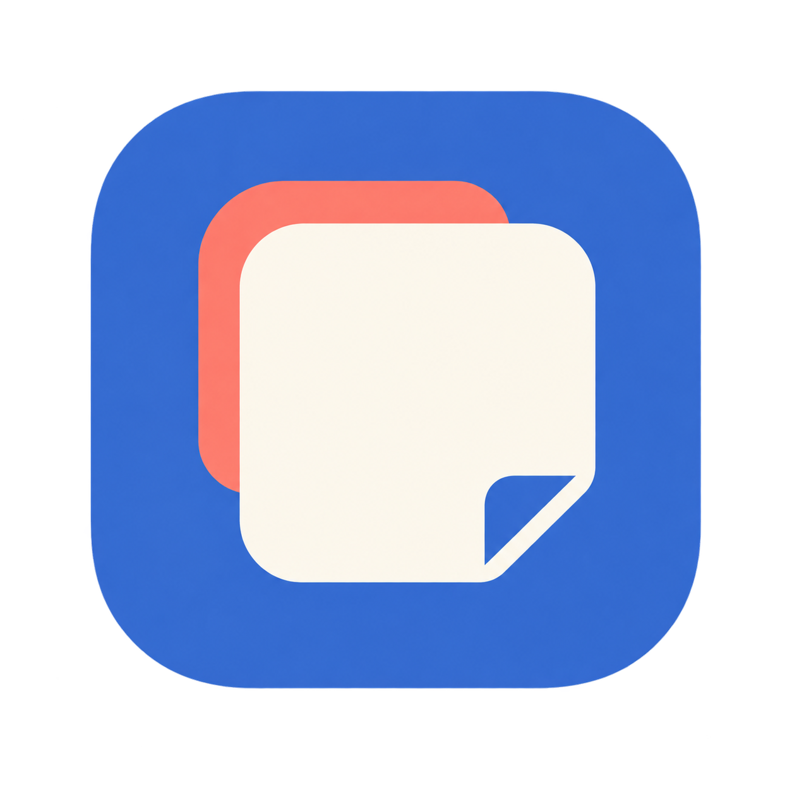
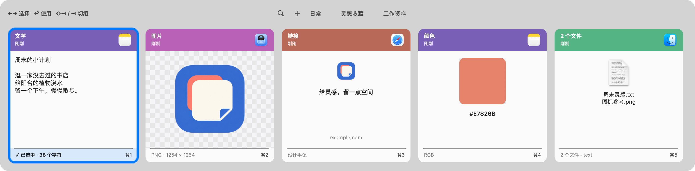

不止是文字
文字、链接、富文本、图片、颜色代码，还有 Finder 文件引用。熟悉的内容，放进同一排卡片。
文件保留原位置的引用，不备份文件内容。

贴伴 PastePal一句话、一张图、一个刚刚用过的文件。
贴伴帮你留住复制记录，让下一次使用少一点翻找。
原生 macOS · 本地历史 · 无需账号

从复制，到再一次使用
留在菜单栏里，需要时再出现。
把注意力留给正在做的事。
文字、链接、富文本、图片、颜色代码，还有 Finder 文件引用。熟悉的内容，放进同一排卡片。
文件保留原位置的引用，不备份文件内容。
输入关键词，按文字、文件名、链接标题或已记录的来源应用查找。常用内容放进自定义分组，下次更好找。
图片可按来源查找，暂不支持文字识别。
方向键选择，回车确认，空格放大预览。也可以用 ⌘1–9，快速使用眼前的对应记录。
正常使用需辅助功能授权；回车默认直接粘贴。
小工具，本地用
不需要登录，没有订阅，也没有应用内同步服务。
记录、搜索和再次使用，离线也能完成。
独立网页链接会联网获取标题与预览图；历史不会作为同步数据上传。你可以暂停记录、排除应用，并管理历史保留条数。
几下按键，就到手边
从一个呼出快捷键开始，
慢慢找到自己的节奏。
搜索时，第一次回车完成搜索并回到卡片，第二次回车才使用记录。正常使用需先授予辅助功能权限；确认使用默认直接粘贴，无法恢复目标位置时会提示手动粘贴。
贴伴 PASTEPAL
在 GitHub Releases 查看版本说明与安装包。
前往 GitHub ReleasesmacOS 15 及以上 · Apple Silicon
安装包以 Releases 页面实际发布的内容为准。应用使用开发证书签名，尚未公证。